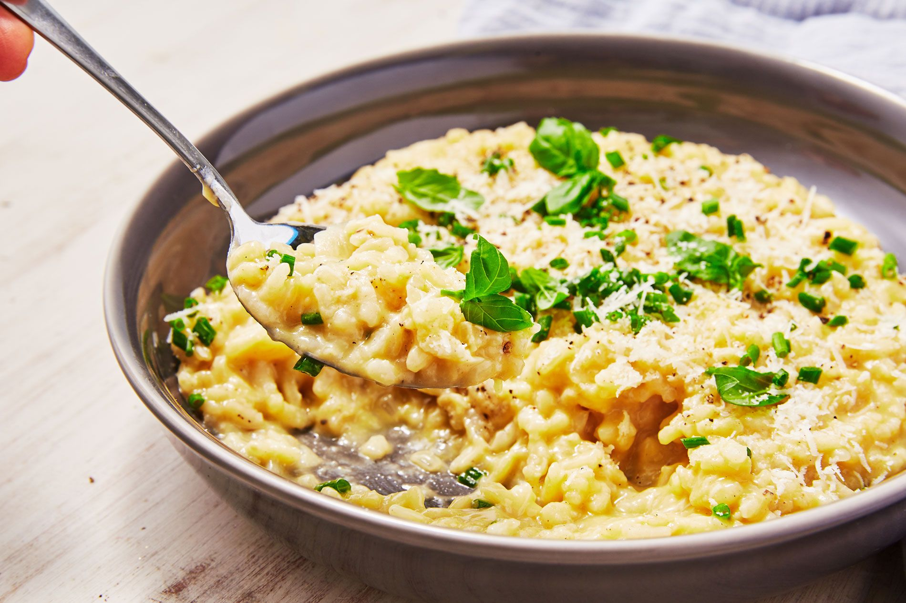

Risotto

Description
The traditional recipe from Italy.
cooked the slow and painful way, but oh so worth it. Complements grilled meats and chicken dishes very well.
Ingredients
- Chicken Broth 6
- Olive Oil 3 tablespoons
- Portobello Mushroom 1 pound
- White Mushroom 1 pound/li>
- Shallots 2, diced
- Arborio Rice 1 1/2 cups
- Chives 3 tablespoons
- Oregano
- Butter 4 tablespoons
- Salt and Pepper
- Parmesan Cheese 1/3 cup
Steps
- In a saucepan, warm the broth over low heat
- Warm the olive oil over medium-heat and stir in the mushrooms for 3 minutes
- Remove mushrooms and their liquid
- Add olive oil to skillet, and stir in the shallots
- Cook 1 minute and add rice, stirring to coat with oil, about 2 minutes
- Pour in the wine, stirring until fully absorbed
- Add 1/2 cup broth to the rice and stir until absorbed
- Continue adding 1/2 cup of broth until the liquid is absorbed and the rice is al dente
- Remove from heat and stir in the mushrroms with their liquid, butter, chives and parmesan
- Season with salt and pepper to taste. Enjoy!
Go Back to main page